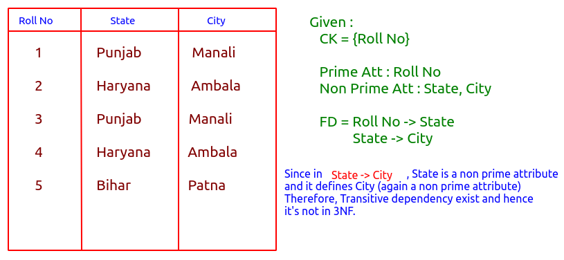

3NF
Third Normal Form
Rule :
⇒ Table must be present in 2NF.
⇒ There should be no transitive dependency(non prime attribute can be deteremined only by prime attribute or candidate attribute).

Que : Check for 3NF :
i) Given :
R(ABCD)
FD: AB → C , C → D
Step 1 : Find the Candidate Key.
AB have to be in CK as it's not to the right of any FD.
AB+ = ABCD
Since none of the parts of AB found in right of any of the FD.
Therefore,
CK = {AB}
Prime Att : A, B
Non-Prim Att : C, D
Step 2 : Now check in FD if any non prime attribute defines another non prime attribute and yes for C → D it holds true and hence transitive dependency exists and Relation not in 3NF.
Hack : For each FD
{LHS must be a CK or SK OR RHS is a Prime Attribute}
ii) Given: R(ABCD)
FD: AB → CD , D → A
Step 1 : Finding Candidate key
B not on right side so it have to be in CK
B+ = B //B alone can't be CK
AB+ = ABCD
So AB will be CK now look for other CK if any.
Since A is present in D → A therefore,
DB+ = ABCD
CK ={AD, DB}
Prim Att = A, B, D
Not Prim = C
Step 2 : Using hack statement we find relation is in 3NF.